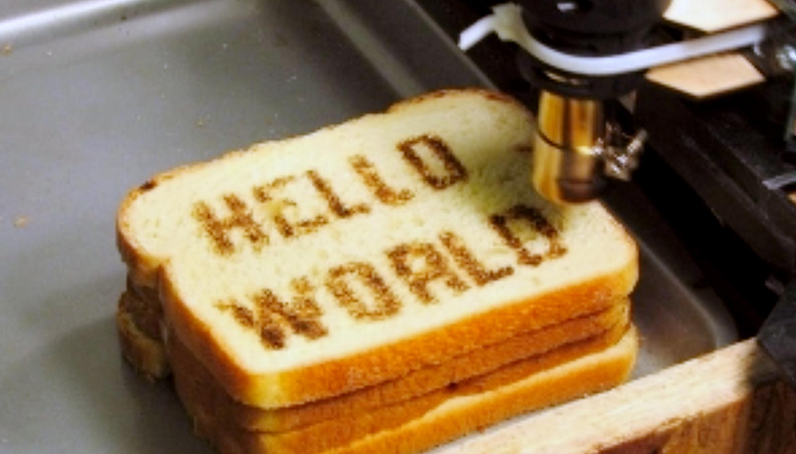

Alimentos generados por impresoras 3D: Un nuevo capítulo en la evolución alimenticia

La tecnología de impresión 3D ha revolucionado la forma en que creamos y fabricamos objetos. Ahora, gracias a los avances en la tecnología de alimentos, la impresión 3D se está abriendo camino en el mundo de la alimentación.
La idea de producir alimentos mediante impresoras 3D puede parecer ciencia ficción, pero ya se está llevando a cabo en algunos laboratorios y empresas de investigación. La posibilidad de producir alimentos personalizados y adaptados a las necesidades individuales de las personas, ha capturado la atención de muchos expertos en el campo de la alimentación.
En un futuro no muy lejano, se podrían imprimir alimentos de alta calidad, utilizando ingredientes cuidadosamente seleccionados y enriquecidos con nutrientes esenciales. La producción de alimentos por impresión 3D permitiría una mayor eficiencia en la producción, lo que podría ayudar a reducir los costos y los residuos, y mejorar la sostenibilidad del sistema alimentario global.
La impresión 3D de alimentos también podría ofrecer soluciones para personas con necesidades dietéticas especiales, como los alérgicos o los intolerantes a ciertos alimentos. Podrían imprimirse alimentos que se adapten perfectamente a las necesidades individuales de cada persona, garantizando una alimentación saludable y personalizada.
Sin embargo, hay quienes temen que la impresión 3D de alimentos pueda cambiar nuestra relación con la comida, llevando a una deshumanización del proceso de producción y consumo de alimentos. Además, hay preocupaciones sobre la seguridad alimentaria y la regulación de este tipo de productos.
A pesar de estas preocupaciones, la impresión 3D de alimentos representa una nueva etapa en la evolución de la alimentación. La tecnología está abriendo nuevas posibilidades para la personalización, la eficiencia y la sostenibilidad en la producción de alimentos. Con el tiempo, es probable que veamos una mayor adopción de esta tecnología, y que se convierta en una parte importante de nuestro sistema alimentario global.